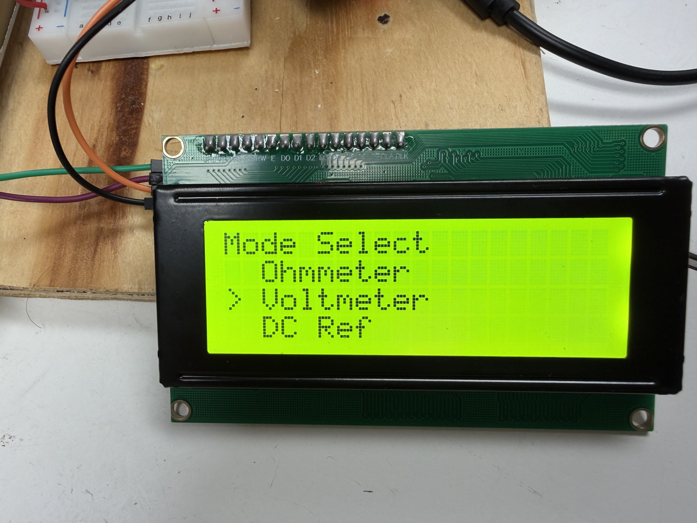
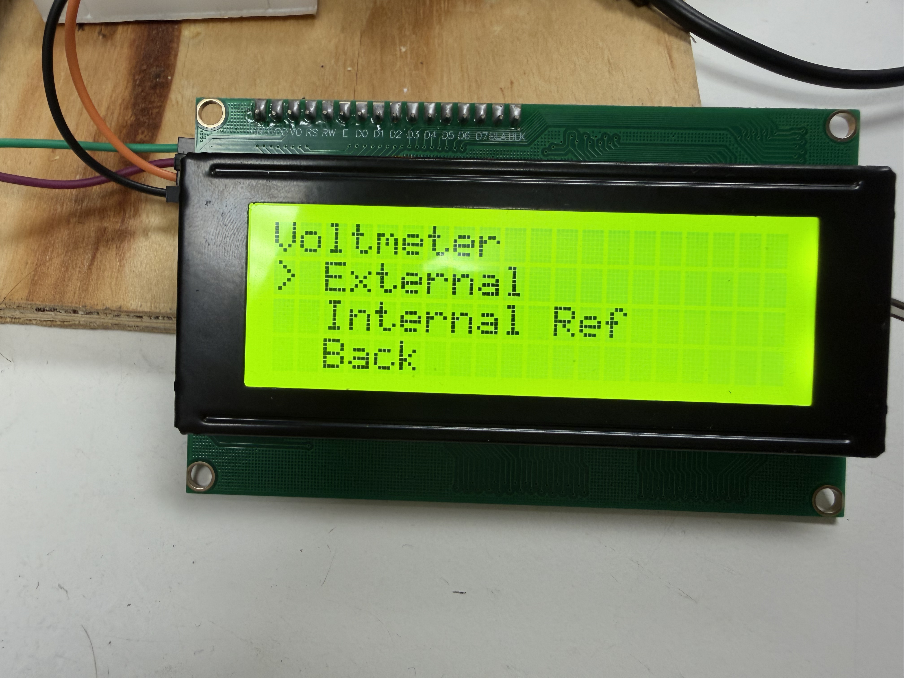
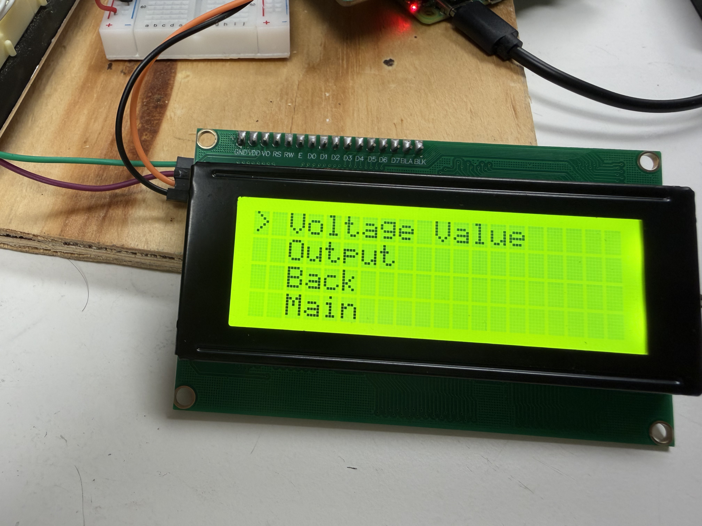
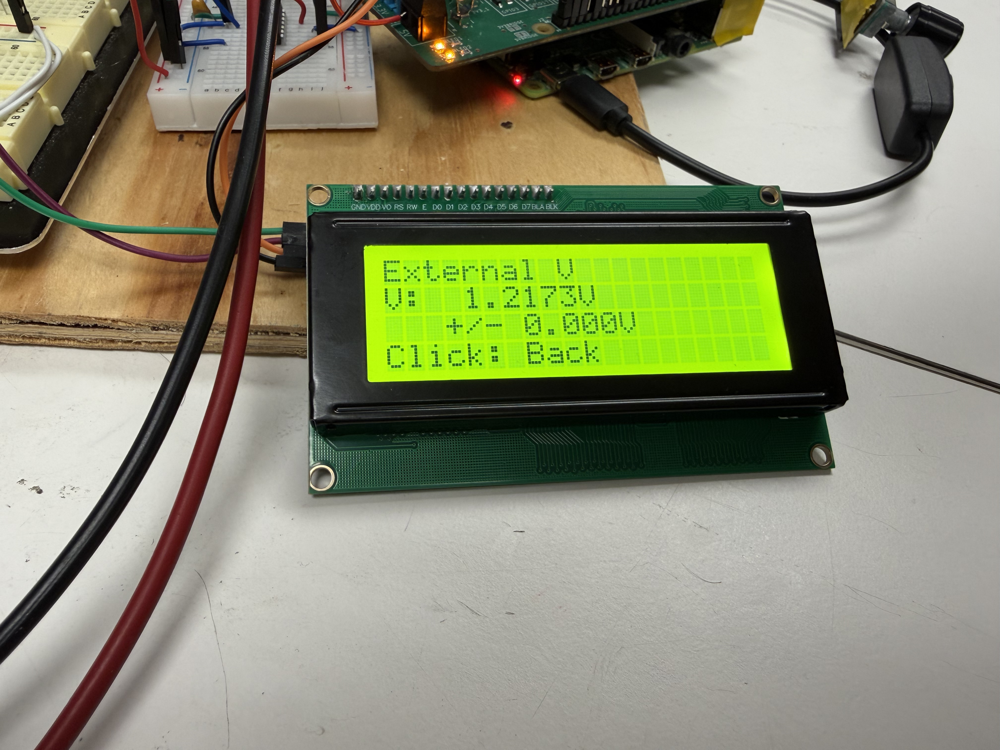

Voltmeter
Welcome to the Voltmeter manual. This guide will walk you through everything you need to know to start measuring voltage with the Tool Bench system — no prior experience required.
The voltmeter lets you measure DC voltage and will show you both the reading and how accurate that reading is, so you always know how much to trust the result. For example, you might see something like 2.5V ± 0.31V — this means the system measured 2.5 volts, and the true value is somewhere in that ± 0.31V window.
Measurement range: ±5V DC • Two modes: External source or Internal Reference
Before You Start
The voltmeter has two modes depending on what you want to measure:
- External — You connect a real-world voltage source (like a battery or power supply) to the system and measure it directly.
- Internal Reference — Instead of an external source, the system uses its own built-in DC Reference module to generate and measure a voltage. Selecting this option will take you to the DC Reference page automatically.
This guide covers both paths. Follow the steps in order and refer to the images at each stage if you’re unsure what the screen should look like.
Access the Voltmeter Menu
Start from the main system menu. You should see a list of available tools on the LCD display. Turn the rotary encoder (the clickable dial) to scroll through the options until Voltmeter is highlighted, then press the encoder down to select it.
The screen will then show the Voltmeter menu, which gives you the choice of measurement source. This will be covered in the next step.

Select a Measurement Mode
The Voltmeter menu shows three options:
- External — Measure voltage from a source you connect yourself
- Internal Ref — Use the system’s built-in DC Reference as the voltage source
- Back — Return to the main menu
Turn the encoder to highlight your choice, then press to confirm. The next steps depend on which option you pick — see the relevant section below.

Path A — Internal Reference
If you selected Internal Ref, the system will automatically take you to the DC Reference module. There is nothing else to do on this page — just follow the DC Reference manual from there.
The DC Reference module will let you set a voltage, turn it on, and then the Voltmeter will measure and display it for you automatically.
→ Continue to the DC Reference Manual

Path B — External Voltage Source
Connect Your Voltage Source
Before the system can take a measurement, you need to physically connect your external voltage source to the Tool Bench using the banana plug inputs on the device.
Polarity matters here — connecting the wires the wrong way around won’t damage the system, but it will give you an incorrect reading:
- Positive wire → Red terminal
- Ground wire → Black terminal
.jpg)
Start the Measurement
Once your source is connected, select External from the Voltmeter menu and press the encoder to confirm. The system will immediately start sampling the voltage automatically — you don’t need to do anything else.
The LCD will update continuously and show you two values:
- Voltage reading (V) — The measured voltage, displayed to 4 decimal places (e.g.
V: 2.4983V) - Estimated error (±) — How much the reading could vary from the true value (e.g.
+/- 0.031V). A smaller number means a more consistent reading.
The system takes multiple samples and averages them to give you the most accurate result it can. The display refreshes roughly 5 times per second.

Exit the Measurement Screen
When you’re done taking your measurement, press the rotary encoder. This will stop the measurement, close the SPI connection in the background, and take you back to the Voltmeter menu.
From here you can either take another measurement or navigate elsewhere in the system.
Return to the Main Menu
From the Voltmeter menu, scroll down to Back and press the encoder. This will take you back to the top-level main menu where you can access any other tool.

Example Demonstration
Want to see the full process from start to finish? Watch the video walkthrough below, which shows a live measurement using an external source.